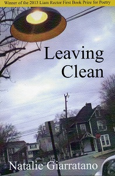
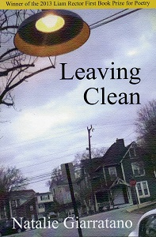

Originally from small-town Southeast Texas, Natalie Giarratano received
her MFA and PhD in creative writing from Western Michigan University.
Her first collection of poems, Leaving Clean, won the 2013 Liam Rector First
Book Prize in Poetry and was published in June 2013 by Briery Creek Press.
Recent poems appear or are forthcoming in Gulf Stream: Poems of the Gulf Coast,
American Literary Review, Laurel Review, and Hayden’s Ferry Review, among others.
D.A. Powell selected her work for inclusion in the 2011 edition of Best New Poets,
and she won the 2011 Ann Stanford Poetry Prize from Southern California Review.
She co-edits Pilot Light, an online journal of 21st century poetics and
criticism, teaches writing at American University, and lives in Northern
Virginia with her husband, Zach Green, and their pup, Miles.
If you would like to get in touch with Natalie, email her at natalie.giarratano@gmail.com.
 

Leaving Clean
Purchase at Amazon or request a signed copy directly from Natalie
About Leaving Clean (July 2013, Briery Creek Press):
“I understand bayous,” says Natalie Giarratano in Leaving Clean. This is not a poet who celebrates
place—her Orange, Texas—she simply knows it, knows what happens there, how the trees are
bracing themselves for the hurricane, knows the mired look of a car on its back at the side of a
muddy woods, the names of boats that brought slaves into Texas. She speaks of dark things in a
voice that is quiet, but it is not shy; it is not even peaceful. Maybe it’s subtlety I’m talking about
(perceptive being one of its synonyms), a humor that’s dire but unassuming, an anger that sort of
travels under the radar. And what other poet would think to give a voice to a pair of tennis shoes
that, hanging from a telephone wire, instruct us on the nature of time? Only Natalie Giarratano, with
her wary grace and her vision that’s finally, somehow, redemptive.
~Nancy Eimers
Natalie Giarratano’s debut volume Leaving Clean brings to light a brilliant poetry that knows that the
heart must break if it is to heal, again and again. In poems that evoke all the complex pungencies of
the Texas Bayou, a weird, wholly recognizable America rises, ever ready to turn its head on the past
it both creates and neglects. These poems contend with the ubiquity of violence in the individual
consciousness, as they argue, implicitly or explicitly, with a vengeful God that embodies the
cruelties we would not understand about ourselves. And there is grace here, and a kind of humility
that refuses to be modest, and a longing that extends into the backwards of time, in details rendered
magically and lovingly enough that individual and collective shame is out-ted and transformed by
poetry into a common, intimate language.
~William Olsen
In her stunning first book, Leaving Clean, Natalie Giarratano offers us an incisive look at a fallen
world, cleansed neither of cruelty nor affection, of bitterness nor conflicted debt, what summons
us to lines that, with a precision of wit and heartbreak, refuse the clean and easy answers. Again and
again we find the spit of gods and fathers and the deep hunger of the traveler who longs to purge
herself of such. There is no map to get us out of this place. Better yet, we have poems of fierce grace
and difficult beauty, poems that plot escape but argue against it. In them we fall back to earth like
love or some such gift of hard rain that dreams of nothing less.
~Bruce Bond
Leaving Clean is the debut of a new, original voice where the cartography of poet Natalie Giarratano’s
inner visions turn themselves further inward, “the eye’s internal stare, / standing guard on the shore
of her body / with lighthouse intensity,” interrogating the ruinous borders of memory where the
poet dares her craft and gaze to take us. These poems refuse to look away and beg to be revisited
over and over. You trust the power and vulnerability of this poet at once. In Leaving Clean, you
will find a profound country unlike any other. Giarratano’s poems concern themselves with
family, secrets, memory, “the spit of God,” the body, the physical world, and a broader, tempered
omniscience about life itself. Against and within her voice, we are never lost or stranded by her
awareness, “We’ve constructed a room / from ourselves where we hide / what secrets we have left.”
You come through these poems as through a fire. It is exactly how Natalie Giarratano tells us: “It’s
then I know there is no map I can buy / to show me the way out of here.”
~Rachel Eliza Griffiths
Events
with W. Joe Hoppe & Ben Kopel
Friday, September 12th
7:30 p.m.
Fun Party Reading Series
grayDUCK Gallery
Austin, TX
with Karissa Morton & Harold Whit Williams
Saturday, September 13th
6:00 p.m.
Kraken Reading Series
The Paschall Bar
Denton, TX
Thursday, November 6th
8 p.m.
Frostic Reading Series
Western Michigan University
Kalamazoo, MI
Archive
with Eric Pankey & others
Tuesday, August 19th
7:30 p.m.
The Inner Loop Reading Series
The Carriage House
Washington, DC
w/ poet Cindy St. John
Friday, November 8th
6 p.m.
Beloved Books & Gallery
Flying Monkey Arts Center
Lowe Mill
2211 Seminole Dr. #273
Huntsville, Alabama 35805
w/ poet Cindy St. John
Saturday, November 9th
Venue and Time TBA
Black Sheep Reading Series
Lexington, Kentucky 40502